Maps (1)
NOTE: This page has been revised for Winter 2024, but may undergo further edits.
1 Introduction
R has the ability through the {maps} package and the
base graphics to generate maps, but such “out-of-the-box” maps, like
other base graphics-generated illustrations, these may not be suitable
for immediate publication. Other options exit, for example, using
packages like {ggmaps}, {mapview}, or
{tmap} However, the ability of the {sf}
package to handle the diverse kinds of spatial data, including
shapefiles, provides a facility for creating publishable maps. The
examples here use a set of shapefiles downloaded from the Natural
Earth web page [http://www.naturalearthdata.com].
There are two R packages that can be used to directly download
Natural Earth data within a script: {rnaturalearth}, and
{rnaturalearthdata}, but it’s usually the case that one
visits the Natural Earth web page anyway, and it’s easy to download (and
save for reuse) files from the web page. Shapefiles and rasters are
available at three scales 1:10m (small spatial scale, large cartographic
scale), 1:50m, and 1:110m (large spatial scale, small cartographic
scale).
This first example recreates Figure 1 from Marlon, J.R., et al., 2016, Reconstructions of biomass burning from sediment-charcoal records to improve data–model comparisons. Biogeosciences 13:3225-3244. [http://www.biogeosciences.net/13/3225/2016/]. There are two general steps in the production of this map, the first involves 1) projecting the Natural Earth shapefiles into the Robinson projection (saving the shapefiles, which can be reused for other applications), and the second the projection of the data and assembly into the finished map.
2 Set up outlines and polygons for global (Robinson projection) maps
2.1 Read Natural Earth shapefiles
The first step is to read a set of shapefiles downloaded from the
Natural Earth web page [http://www.naturalearthdata.com],
and project these into the Robinson projection. Two CRAN packages,
{rnaturalearth} and {rnaturalearthdata} can be
used to manage and download the data within R, but the Natural
Earth web pages are worth looking at.
Begin by loading the appropriate packages:
Now read the shape files, including those for global coastlines, adminstrative units (borders), large lakes, and a graticule. Set the filenames:
# Natural Earth shape files -- global (Robinson) projections
# get shapefiles from http://www.naturalearthdata.com
shape_path <- "/Users/bartlein/Projects/RESS/data/RMaps/source/"
coast_shapefile <- paste(shape_path, "ne_50m_coastline/ne_50m_coastline.shp", sep="")
ocean_shapefile <- paste(shape_path, "ne_50m_ocean/ne_50m_ocean.shp", sep="")
land_shapefile <- paste(shape_path, "ne_50m_land/ne_50m_land.shp", sep="")
admin0_shapefile <- paste(shape_path, "ne_50m_admin_0_countries/ne_50m_admin_0_countries.shp", sep="")
admin1_shapefile <- paste(shape_path,
"ne_50m_admin_1_states_provinces_lakes/ne_50m_admin_1_states_provinces_lakes.shp", sep="")
lakes_shapefile <- paste(shape_path, "ne_50m_lakes/ne_50m_lakes.shp", sep="")
bb_shapefile <- paste(shape_path, "ne_50m_graticules_all/ne_50m_wgs84_bounding_box.shp", sep="")
grat30_shapefile <- paste(shape_path, "ne_50m_graticules_all/ne_50m_graticules_30.shp", sep="")Before reading each file, determine what kind it is (e.g. lines
vs. polygons). This information will be used to (manually, but it could
be coded) to name the sf objects. read and plot it. As an
example:
# query geometry type
coast_geometry <- as.character(st_geometry_type(st_read(coast_shapefile), by_geometry = FALSE))## Reading layer `ne_50m_coastline' from data source
## `/Users/bartlein/Projects/RESS/data/RMaps/source/ne_50m_coastline/ne_50m_coastline.shp'
## using driver `ESRI Shapefile'
## Simple feature collection with 1428 features and 2 fields
## Geometry type: MULTILINESTRING
## Dimension: XY
## Bounding box: xmin: -180 ymin: -85.19219 xmax: 180 ymax: 83.59961
## Geodetic CRS: WGS 84## [1] "MULTILINESTRING"So the coast_shapefile has a “MULTILINESTRING” geometry
type, so we’ll call the input sf object
“coast_lines_sf”
In the ‘plot()’ functions below, use the col argument
for lines, border for polygon border colors. Read and plot
the shapefiles:
## Reading layer `ne_50m_coastline' from data source
## `/Users/bartlein/Projects/RESS/data/RMaps/source/ne_50m_coastline/ne_50m_coastline.shp'
## using driver `ESRI Shapefile'
## Simple feature collection with 1428 features and 2 fields
## Geometry type: MULTILINESTRING
## Dimension: XY
## Bounding box: xmin: -180 ymin: -85.19219 xmax: 180 ymax: 83.59961
## Geodetic CRS: WGS 84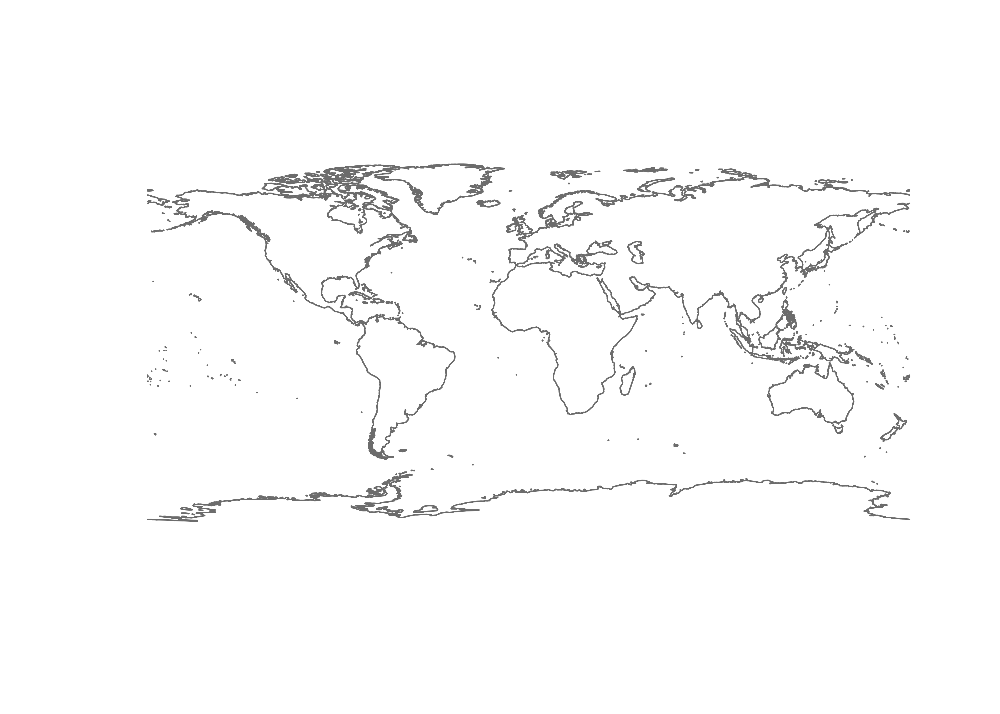
Read and plot the other shapefiles. (Note that the summary output is suppressed.)
# read and plot other shape files, noting geometry types
ocean_poly_sf <- st_read(ocean_shapefile) # note: geometry type MULTIPOLYGON
plot(st_geometry(ocean_poly_sf), col="gray80")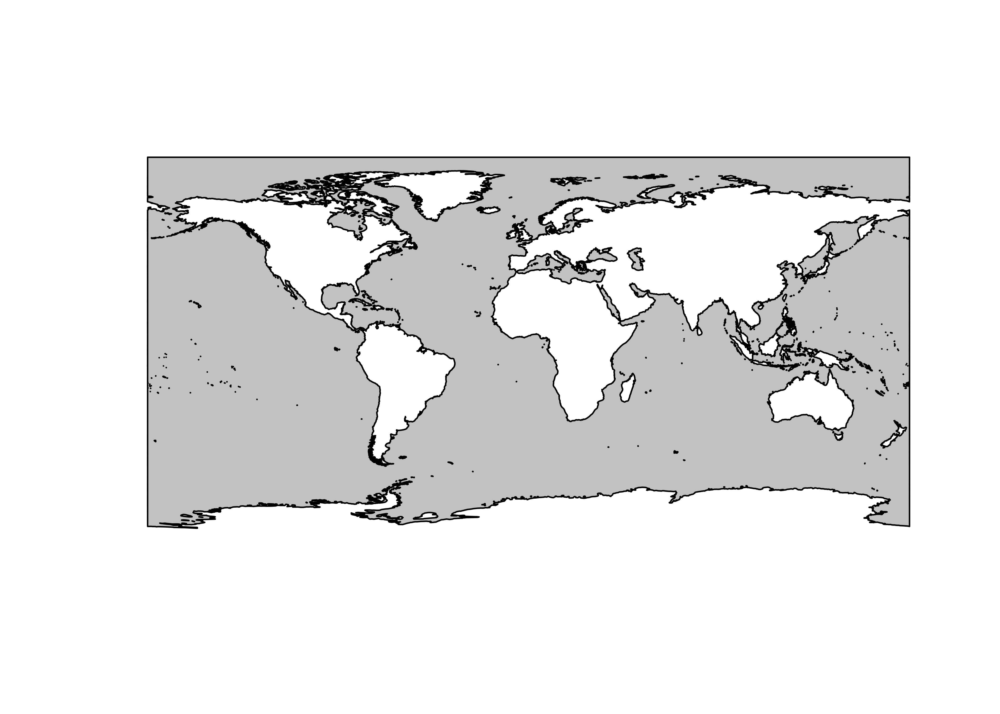
land_poly_sf <- st_read(land_shapefile) # note: geometry type MULTIPOLYGON
plot(st_geometry(land_poly_sf), col="gray80")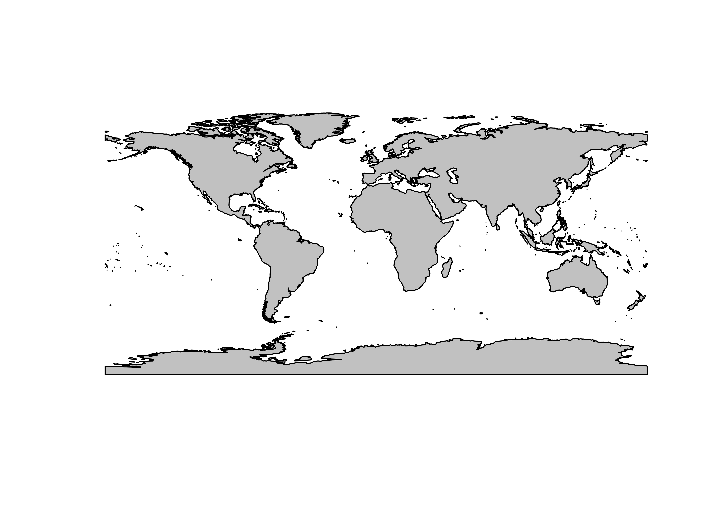
admin0_poly_sf <- st_read(admin0_shapefile) # note: geometry type MULTIPOLYGON
plot(st_geometry(admin0_poly_sf), col="gray70", border="red")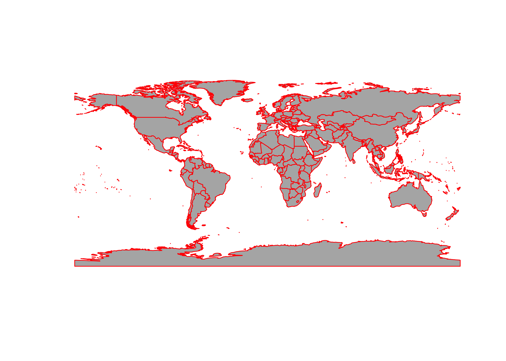
admin1_poly_sf <- st_read(admin1_shapefile) # note: geometry type MULTIPOLYGON
plot(st_geometry(admin1_poly_sf), col="gray70", border="pink")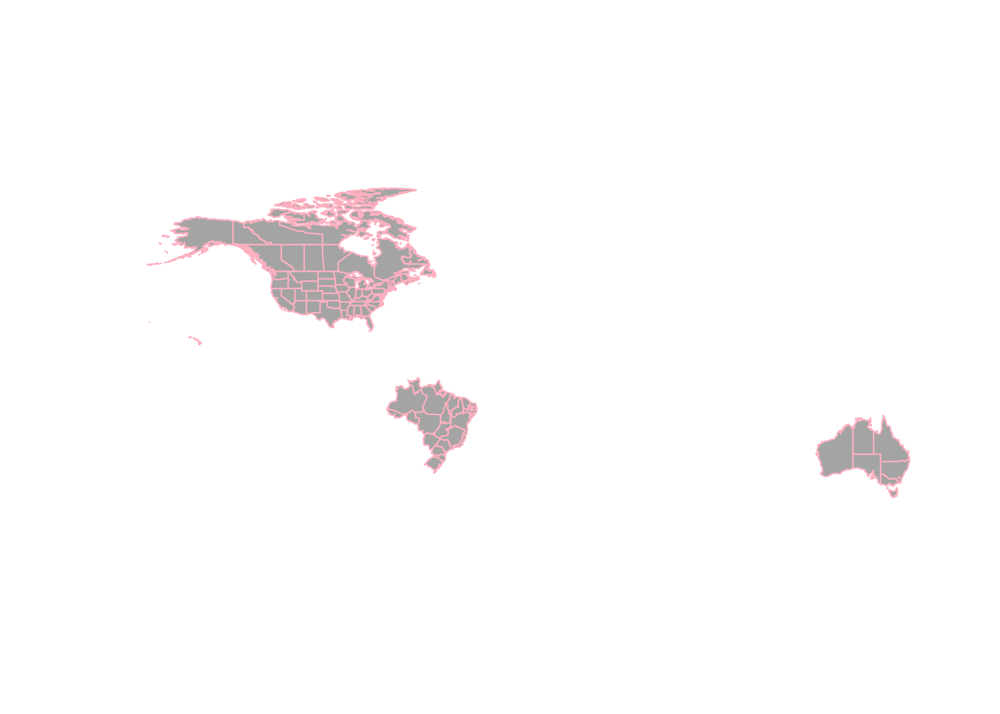
lakes_poly_sf <- st_read(lakes_shapefile) # note: geometry type POLYGON
plot(st_geometry(lakes_poly_sf), col="blue")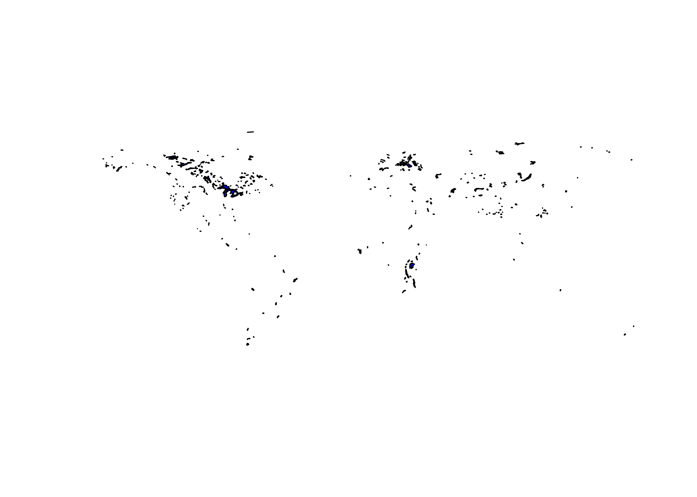
bb_poly_sf <- st_read(bb_shapefile) # note: geometry type POLYGON
plot(st_geometry(bb_poly_sf), col="gray70")grat30_lines_sf <- st_read(grat30_shapefile) # note: geometry type LINESTRING
plot(st_geometry(grat30_lines_sf), col="black")Filter the lakes_poly_sf object to the the largest lakes
only:
# get large lakes only
lrglakes_poly_sf <- lakes_poly_sf[as.numeric(lakes_poly_sf$scalerank) <= 2 ,]
plot(st_geometry(lrglakes_poly_sf), col="lightblue")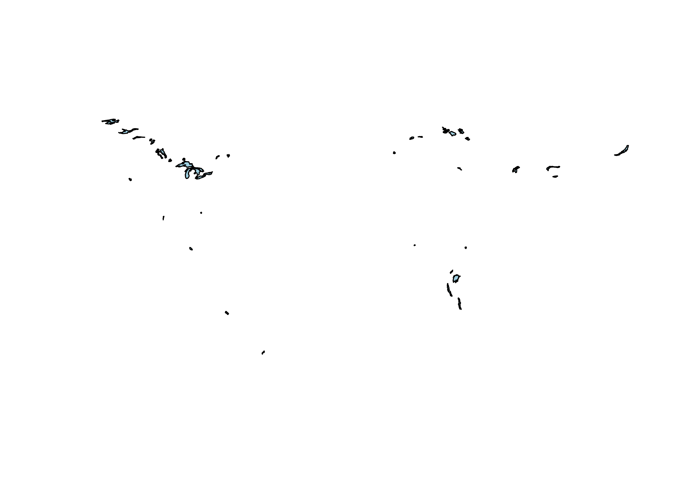
Plot everything.
# plot everything
plot(st_geometry(coast_lines_sf), col="black")
plot(st_geometry(ocean_poly_sf), col="skyblue1", add=TRUE)
plot(st_geometry(land_poly_sf), col="palegreen", add=TRUE)
plot(st_geometry(admin0_poly_sf), border="red", add=TRUE)
plot(st_geometry(admin1_poly_sf), border="pink", add=TRUE)
plot(st_geometry(lakes_poly_sf), border="lightblue", add=TRUE)
plot(st_geometry(lrglakes_poly_sf), border="blue", add=TRUE)
plot(st_geometry(grat30_lines_sf), col="gray50", add=TRUE)
plot(st_geometry(bb_poly_sf), border="black", add=TRUE)
plot(st_geometry(coast_lines_sf), col="purple", add=TRUE)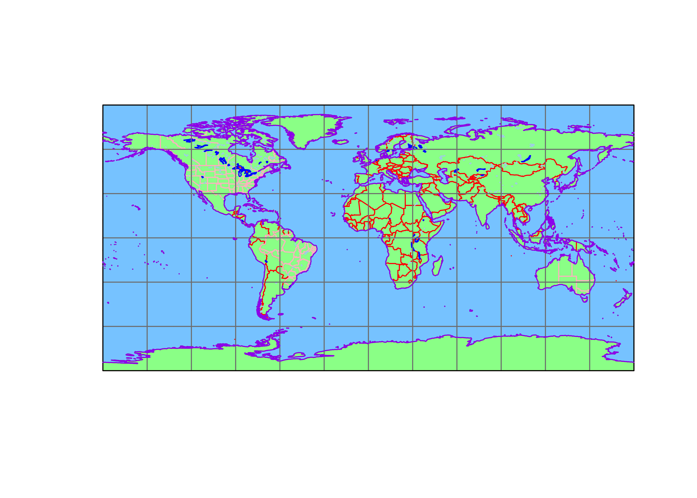
2.2 Project the shapefiles
Next, transform (project) the individual shapefiles into the Robinson
projection using st_transform(). Get the current coordinate
reference system (i.e. the PROJ4 string).
## Coordinate Reference System:
## User input: WGS 84
## wkt:
## GEOGCRS["WGS 84",
## DATUM["World Geodetic System 1984",
## ELLIPSOID["WGS 84",6378137,298.257223563,
## LENGTHUNIT["metre",1]]],
## PRIMEM["Greenwich",0,
## ANGLEUNIT["degree",0.0174532925199433]],
## CS[ellipsoidal,2],
## AXIS["latitude",north,
## ORDER[1],
## ANGLEUNIT["degree",0.0174532925199433]],
## AXIS["longitude",east,
## ORDER[2],
## ANGLEUNIT["degree",0.0174532925199433]],
## ID["EPSG",4326]]Set the PROJ string for the projected (Robinson)
sf objects:
## [1] "+proj=robin +lon_0=0w"Now do the projections.
# do projections
coast_lines_proj <- st_transform(coast_lines_sf, crs = st_crs(robinson_projstring))
ocean_poly_proj <- st_transform(ocean_poly_sf, crs = st_crs(robinson_projstring))
land_poly_proj <- st_transform(land_poly_sf, crs = st_crs(robinson_projstring))
admin0_poly_proj <- st_transform(admin0_poly_sf, crs = st_crs(robinson_projstring))
admin1_poly_proj <- st_transform(admin1_poly_sf, crs = st_crs(robinson_projstring))
lakes_poly_proj <- st_transform(lakes_poly_sf, crs = st_crs(robinson_projstring))
lrglakes_poly_proj <- st_transform(lrglakes_poly_sf, crs = st_crs(robinson_projstring))
grat30_lines_proj <- st_transform(grat30_lines_sf, crs = st_crs(robinson_projstring))
bb_poly_proj <- st_transform(bb_poly_sf, crs = st_crs(robinson_projstring))Plot the projected shapefiles.
# plot projected files
plot(st_geometry(bb_poly_proj), col="gray90", border="black", lwd=2)
plot(st_geometry(coast_lines_proj), col="black", add=TRUE)
plot(st_geometry(ocean_poly_proj), col="skyblue1", add=TRUE)
plot(st_geometry(land_poly_proj), col="palegreen", add=TRUE)
plot(st_geometry(admin0_poly_proj), border="red", add=TRUE)
plot(st_geometry(admin1_poly_proj), border="pink", add=TRUE)
plot(st_geometry(lakes_poly_proj), col="lightblue", add=TRUE)
plot(st_geometry(lrglakes_poly_proj), col="blue", add=TRUE)
plot(st_geometry(grat30_lines_proj), col="gray50", add=TRUE)
plot(st_geometry(coast_lines_proj), col="purple", add=TRUE)
plot(st_geometry(bb_poly_proj), border="black", lwd=2, add=TRUE)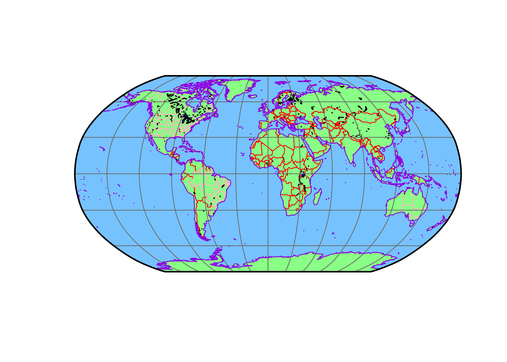
Because the map we’re creating will use the borders and lakes only as
outlines (as opposed to polygons that might be filled with a specific
color), those polygons can be converted to MULTILINESTRING
objects.
# convert MULTIPOLYGON to MULTILINESTRING
admin0_lines_proj <- st_cast(admin0_poly_proj, "MULTILINESTRING")
admin1_lines_proj <- st_cast(admin1_poly_proj, "MULTILINESTRING")
lakes_lines_proj <- st_cast(lakes_poly_proj, "MULTILINESTRING")
lrglakes_lines_proj <- st_cast(lrglakes_poly_proj, "MULTILINESTRING")
bb_lines_proj <- st_cast(bb_poly_proj, "MULTILINESTRING")Plot the new MULTILINESTRING objects
# test the MULTILINESTRING objects
plot(st_geometry(bb_lines_proj), col="black")
plot(st_geometry(coast_lines_proj), col="green", add=TRUE)
plot(st_geometry(admin0_lines_proj), col="lightblue", add=TRUE)
plot(st_geometry(admin1_lines_proj), col="lightblue", add=TRUE)
plot(st_geometry(lakes_lines_proj), col="blue", add=TRUE)
plot(st_geometry(lrglakes_lines_proj), col="purple", add=TRUE)
plot(st_geometry(grat30_lines_proj), col="gray", add=TRUE)
plot(st_geometry(coast_lines_proj), col="black", add=TRUE)
plot(st_geometry(bb_lines_proj), border="black", lwd = 2, add=TRUE)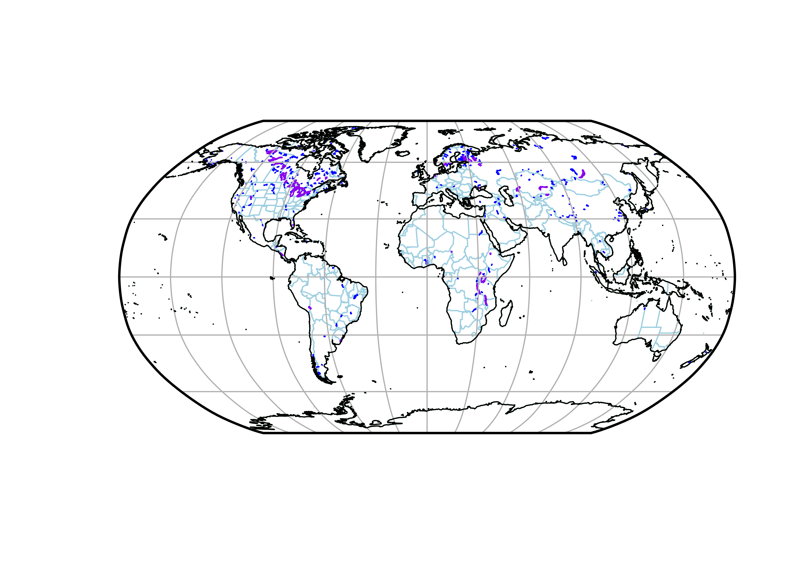
2.3 Write out the projected shapefiles
Next, write out the projected shapefiles, first setting the output path.
# write out the various projected shapefiles
outpath <- "/Users/bartlein/Projects/RESS/data/RMaps/derived/glRob_50m/"Write out the projected coastlines.
# coast lines
outshape <- coast_lines_proj
outfile <- "glRob_50m_coast_lines/"
outshapefile <- paste(outpath,outfile,sep="")
st_write(coast_lines_proj, outshapefile, driver = "ESRI Shapefile", append = FALSE)## Deleting layer `glRob_50m_coast_lines' using driver `ESRI Shapefile'
## Writing layer `glRob_50m_coast_lines' to data source
## `/Users/bartlein/Projects/RESS/data/RMaps/derived/glRob_50m/glRob_50m_coast_lines/' using driver `ESRI Shapefile'
## Writing 1428 features with 2 fields and geometry type Multi Line String.It’s always good practice to test whether the shapefile has indeed been written out correctly. Read it back in and plot it.
## Reading layer `glRob_50m_coast_lines' from data source
## `/Users/bartlein/Projects/RESS/data/RMaps/derived/glRob_50m/glRob_50m_coast_lines' using driver `ESRI Shapefile'
## Simple feature collection with 1428 features and 2 fields
## Geometry type: MULTILINESTRING
## Dimension: XY
## Bounding box: xmin: -16807980 ymin: -8429152 xmax: 16873230 ymax: 8340316
## Projected CRS: +proj=robin +lon_0=0 +x_0=0 +y_0=0 +datum=WGS84 +units=m +no_defs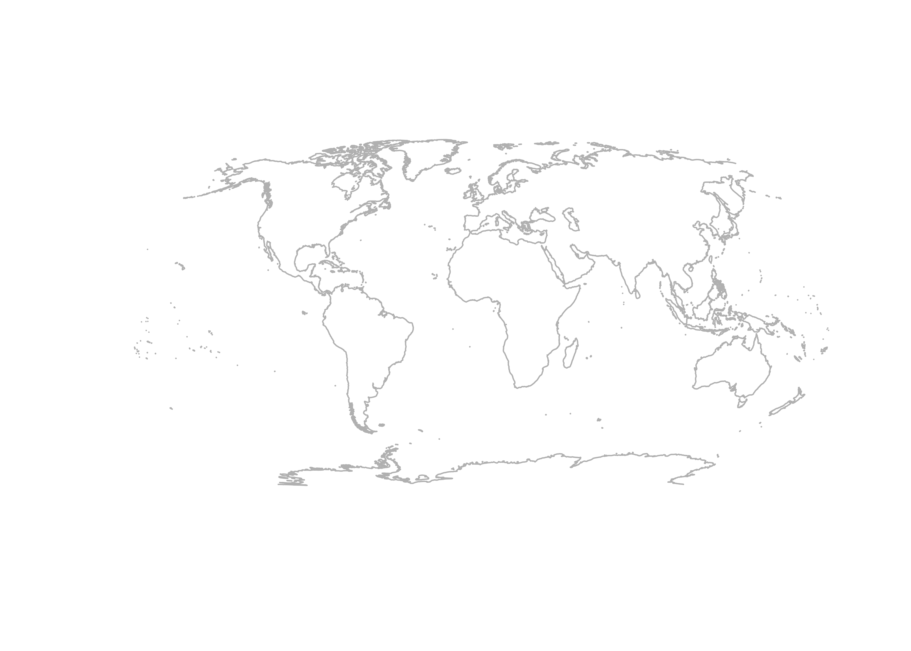
Write out the other shapefiles.
# write out the other objects as shapefiles
outshape <- bb_poly_proj
outfile <- "glRob_50m_bb_poly/"
outshapefile <- paste(outpath,outfile,sep="")
st_write(outshape, outshapefile, driver = "ESRI Shapefile", append = FALSE)
outshape <- bb_lines_proj
outfile <- "glRob_50m_bb_lines/"
outshapefile <- paste(outpath,outfile,sep="")
st_write(outshape, outshapefile, driver = "ESRI Shapefile", append = FALSE)
outshape <- ocean_poly_proj
outfile <- "glRob_50m_ocean_poly/"
outshapefile <- paste(outpath,outfile,sep="")
st_write(outshape, outshapefile, driver = "ESRI Shapefile", append = FALSE)
outshape <- land_poly_proj
outfile <- "glRob_50m_land_poly/"
outshapefile <- paste(outpath,outfile,sep="")
st_write(outshape, outshapefile, driver = "ESRI Shapefile", append = FALSE)
outshape <- admin0_poly_proj
outfile <- "glRob_50m_admin0_poly/"
outshapefile <- paste(outpath,outfile,sep="")
st_write(outshape, outshapefile, driver = "ESRI Shapefile", append = FALSE)
outshape <- admin0_lines_proj
outfile <- "glRob_50m_admin0_lines/"
outshapefile <- paste(outpath,outfile,sep="")
st_write(outshape, outshapefile, driver = "ESRI Shapefile", append = FALSE)
outshape <- admin1_poly_proj
outfile <- "glRob_50m_admin1_poly/"
outshapefile <- paste(outpath,outfile,sep="")
st_write(outshape, outshapefile, driver = "ESRI Shapefile", append = FALSE)
outshape <- admin1_lines_proj
outfile <- "glRob_50m_admin1_lines/"
outshapefile <- paste(outpath,outfile,sep="")
st_write(outshape, outshapefile, driver = "ESRI Shapefile", append = FALSE)
outshape <- lakes_poly_proj
outfile <- "glRob_50m_lakes_poly/"
outshapefile <- paste(outpath,outfile,sep="")
st_write(outshape, outshapefile, driver = "ESRI Shapefile", append = FALSE)
outshape <- lakes_lines_proj
outfile <- "glRob_50m_lakes_lines/"
outshapefile <- paste(outpath,outfile,sep="")
st_write(outshape, outshapefile, driver = "ESRI Shapefile", append = FALSE)
outshape <- lrglakes_poly_proj
outfile <- "glRob_50m_lrglakes_poly/"
outshapefile <- paste(outpath,outfile,sep="")
st_write(outshape, outshapefile, driver = "ESRI Shapefile", append = FALSE)
outshape <- lrglakes_lines_proj
outfile <- "glRob_50m_lrglakes_lines/"
outshapefile <- paste(outpath,outfile,sep="")
st_write(outshape, outshapefile, driver = "ESRI Shapefile", append = FALSE)
outshape <- grat30_lines_proj
outfile <- "glRob_50m_grat30_lines/"
outshapefile <- paste(outpath,outfile,sep="")
st_write(outshape, outshapefile, driver = "ESRI Shapefile", append = FALSE)2.4 Clip out a polygon for the Caspian
Another setup step, and again one that creates some reusable files, is to make a polygon shape file for the Caspian Sea, which can be plotted and filled with color. Some terrestrial databases, including the treecover data that will be plotted below include non-missing data for gridpoints that cover the Caspian Sea (or sometimes the Black Sea). It’s useful to be able to knock out those points by plotting a filled polygon with the same color that is used for the ocean. The steps involved include trimming to coastlines file to the area around the Caspian, and then turning those lines into a polygon (which can be projected)>
The first step is to creat a “bounding box” that surrouds the Caspian.
# Caspian
caspian_bb <- st_bbox(c(xmin = 45, ymin = 35, xmax = 56, ymax = 50), crs = unproj_projstring)
caspian_bb <- st_as_sfc(caspian_bb)# get the points that define the ouline of the Caspian
# get the points that define the outline of the Caspian
caspian_lines <- st_intersection(coast_lines_sf, caspian_bb )## Warning: attribute variables are assumed to be spatially constant throughout all geometries## Simple feature collection with 6 features and 2 fields
## Geometry type: LINESTRING
## Dimension: XY
## Bounding box: xmin: 46.70723 ymin: 36.6145 xmax: 54.72324 ymax: 47.11016
## Geodetic CRS: WGS 84
## scalerank featurecla geometry
## 117 0 Coastline LINESTRING (53.05518 39.037...
## 118 0 Coastline LINESTRING (50.09531 44.830...
## 119 0 Coastline LINESTRING (50.29492 45.075...
## 186 0 Coastline LINESTRING (52.65957 45.518...
## 187 0 Coastline LINESTRING (47.98711 45.554...
## 1388 0 Coastline LINESTRING (54.71006 40.891...“Recast” into a polygon:
## Simple feature collection with 6 features and 2 fields
## Geometry type: POLYGON
## Dimension: XY
## Bounding box: xmin: 46.70723 ymin: 36.6145 xmax: 54.72324 ymax: 47.11016
## Geodetic CRS: WGS 84
## scalerank featurecla geometry
## 117 0 Coastline POLYGON ((53.05518 39.03794...
## 118 0 Coastline POLYGON ((50.09531 44.83062...
## 119 0 Coastline POLYGON ((50.29492 45.07593...
## 186 0 Coastline POLYGON ((52.65957 45.51807...
## 187 0 Coastline POLYGON ((47.98711 45.55405...
## 1388 0 Coastline POLYGON ((54.71006 40.89111...Plot the Caspian polygon
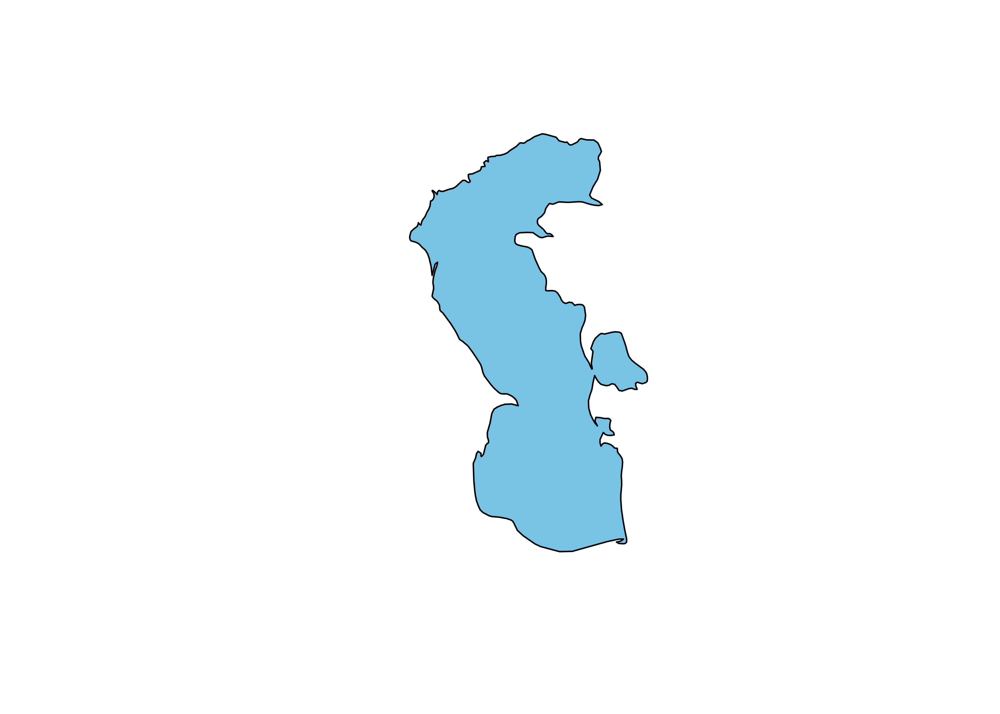
Project and plot the Caspian polygon:
# project the Caspian outline
caspian_poly_proj <- st_transform(caspian_poly, crs = st_crs(robinson_projstring))
plot(st_geometry(caspian_poly_proj), col = "skyblue")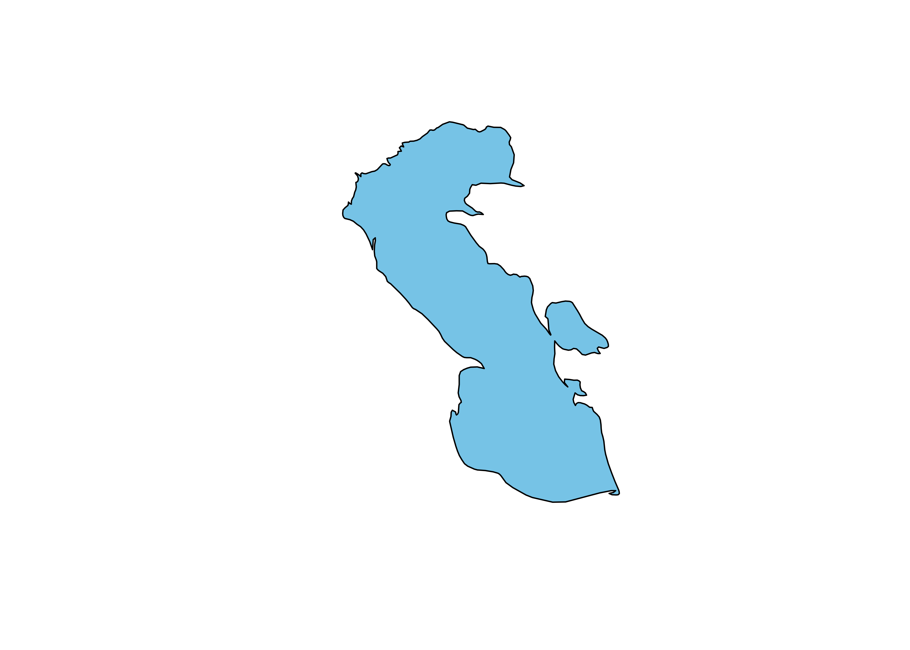
Write out the Caspian polygon.
# save the Caspian outlines
outshape <- caspian_poly
outfile <- "glRob_50m_caspian_poly/"
outshapefile <- paste(outpath,outfile,sep="")
st_write(caspian_poly, outshapefile, driver = "ESRI Shapefile", append = FALSE)## Deleting layer `glRob_50m_caspian_poly' using driver `ESRI Shapefile'
## Writing layer `glRob_50m_caspian_poly' to data source
## `/Users/bartlein/Projects/RESS/data/RMaps/derived/glRob_50m/glRob_50m_caspian_poly/' using driver `ESRI Shapefile'
## Writing 6 features with 2 fields and geometry type Polygon.# projected lines
outshape <- caspian_poly_proj
outfile <- "glRob_50m_caspian_poly_proj/"
outshapefile <- paste(outpath,outfile,sep="")
st_write(caspian_poly_proj, outshapefile, driver = "ESRI Shapefile", append = FALSE)## Deleting layer `glRob_50m_caspian_poly_proj' using driver `ESRI Shapefile'
## Writing layer `glRob_50m_caspian_poly_proj' to data source
## `/Users/bartlein/Projects/RESS/data/RMaps/derived/glRob_50m/glRob_50m_caspian_poly_proj/' using driver `ESRI Shapefile'
## Writing 6 features with 2 fields and geometry type Polygon.3 Set up tree-cover data
One version of Fig. 1 in Marlon et al. (2016) includes a gray-shade
“layer” of the “UMD” tree-cover data (Defries et al., 2000, A new global
1-km dataset of percentage tree cover derived from remote sensing,
Global Change Biology 6:247-254) [http://glcf.umd.edu/data/treecover/data.shtml],
used to provide a background context for the location of the GCDv3
sites. The data were converted to a netCDF file, and this is read, and
in turn converted to an sf POINTS and POLYGON
3.1 Read the tree-cover data
# read a single-variable netCDF dataset using stars to read_ncdf
tree_path <- "/Users/bartlein/Projects/RESS/data/nc_files/"
tree_name <- "treecov.nc"
tree_file <- paste(tree_path, tree_name, sep="")
tree <- read_ncdf(tree_file, var = "treecov")## Will return stars object with 259200 cells.## No projection information found in nc file.
## Coordinate variable units found to be degrees,
## assuming WGS84 Lat/Lon.## stars object with 2 dimensions and 1 attribute
## attribute(s):
## Min. 1st Qu. Median Mean 3rd Qu. Max. NA's
## treecov [1] -2 -1 -1 20.2204 42 80 198720
## dimension(s):
## from to offset delta refsys x/y
## lon 1 720 -180 0.5 WGS 84 [x]
## lat 1 360 -90 0.5 WGS 84 [y]Convert to points:
# convert stars object to sf POINTS
treecov_pts <- st_as_sf(tree, as_points = TRUE)
plot(treecov_pts, pch = 16, cex = 0.5)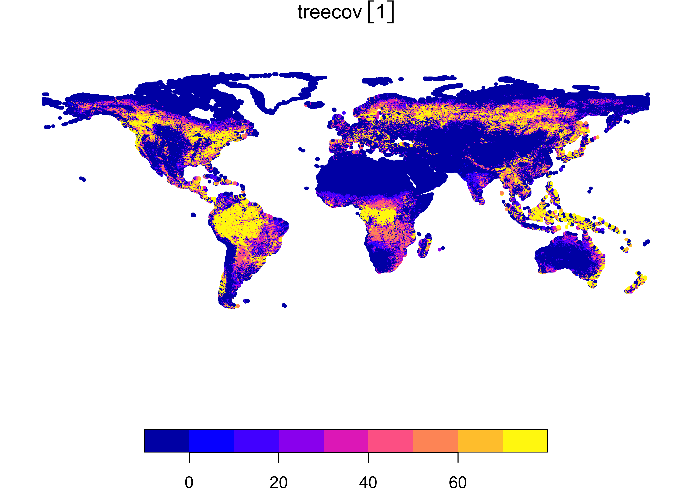
# also plot a zoomed-in view of the western U.S.
plot(treecov_pts, xlim = c(-125, -100), ylim = c(30, 50), pch = 16, main = "treecov_pts")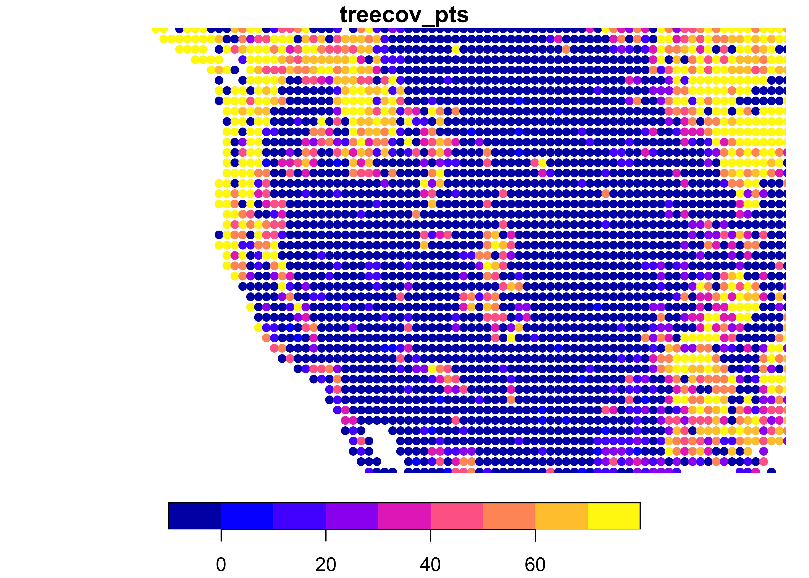
Convert to polygons, and plot a zoomed-in look at the western U.S:
# convert stars object to sf POLYGONS
treecov_poly <- st_as_sf(tree, as_points = FALSE)
treecov_poly## Simple feature collection with 60480 features and 1 field
## Geometry type: POLYGON
## Dimension: XY
## Bounding box: xmin: -180 ymin: -90 xmax: 180 ymax: 90
## Geodetic CRS: WGS 84
## First 10 features:
## treecov geometry
## 1 0 [1] POLYGON ((-67.5 -56, -67 -5...
## 2 70 [1] POLYGON ((-70 -55.5, -69.5 ...
## 3 74 [1] POLYGON ((-69.5 -55.5, -69 ...
## 4 58 [1] POLYGON ((-69 -55.5, -68.5 ...
## 5 0 [1] POLYGON ((-68.5 -55.5, -68 ...
## 6 -2 [1] POLYGON ((-68 -55.5, -67.5 ...
## 7 59 [1] POLYGON ((-67.5 -55.5, -67 ...
## 8 0 [1] POLYGON ((-72 -55, -71.5 -5...
## 9 19 [1] POLYGON ((-71 -55, -70.5 -5...
## 10 0 [1] POLYGON ((-70.5 -55, -70 -5...# check western U.S.
plot(treecov_poly, xlim = c(-125, -100), ylim = c(30, 50), main = "treecov_poly")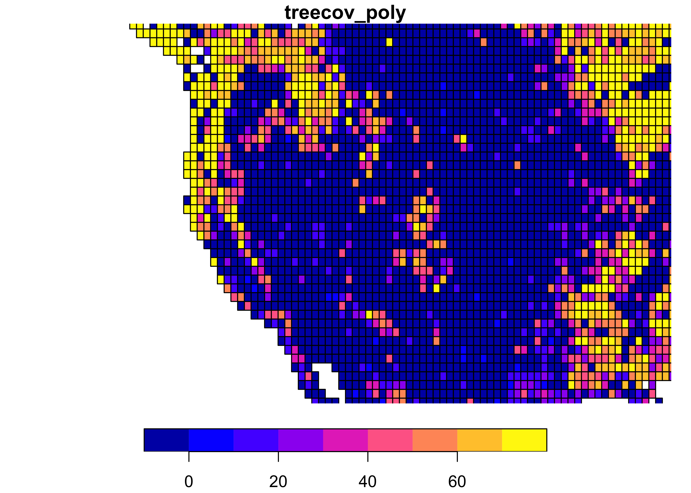
Write out the shapefiles.
# write out the unprojected points
outpath <- "/Users/bartlein/Projects/RESS/data/RMaps/derived/treecov/"
outfile <- "treecov_pts/"
outshapefile <- paste(outpath,outfile,sep="")
st_write(treecov_pts, outshapefile, driver = "ESRI Shapefile", append = FALSE)## Deleting layer `treecov_pts' using driver `ESRI Shapefile'
## Writing layer `treecov_pts' to data source
## `/Users/bartlein/Projects/RESS/data/RMaps/derived/treecov/treecov_pts/' using driver `ESRI Shapefile'
## Writing 60480 features with 1 fields and geometry type Point.# write out the unprojected polygons
outshape <- treecov_poly
outfile <- "treecov_poly/"
outshapefile <- paste(outpath,outfile,sep="")
st_write(treecov_poly, outshapefile, driver = "ESRI Shapefile", append = FALSE)## Deleting layer `treecov_poly' using driver `ESRI Shapefile'
## Writing layer `treecov_poly' to data source
## `/Users/bartlein/Projects/RESS/data/RMaps/derived/treecov/treecov_poly/' using driver `ESRI Shapefile'
## Writing 60480 features with 1 fields and geometry type Polygon.3.2 Project the treecover points and polygons
Project the tree-cover data:
# project the treecover data
treecov_pts_proj <- st_transform(treecov_pts, crs = st_crs(robinson_projstring))
treecov_poly_proj <- st_transform(treecov_poly, crs = st_crs(robinson_projstring))Write out the projected points and polygons:
# write out the projected points
outshape <- treecov_pts_proj
outfile <- "treecov_pts_proj/"
outshapefile <- paste(outpath,outfile,sep="")
st_write(treecov_pts_proj, outshapefile, driver = "ESRI Shapefile", append = FALSE)## Deleting layer `treecov_pts_proj' using driver `ESRI Shapefile'
## Writing layer `treecov_pts_proj' to data source
## `/Users/bartlein/Projects/RESS/data/RMaps/derived/treecov/treecov_pts_proj/' using driver `ESRI Shapefile'
## Writing 60480 features with 1 fields and geometry type Point.# write out the projected polygons
outshape <- treecov_poly_proj
outfile <- "treecov_poly_proj/"
outshapefile <- paste(outpath,outfile,sep="")
st_write(treecov_poly_proj, outshapefile, driver = "ESRI Shapefile", append = FALSE)## Deleting layer `treecov_poly_proj' using driver `ESRI Shapefile'
## Writing layer `treecov_poly_proj' to data source
## `/Users/bartlein/Projects/RESS/data/RMaps/derived/treecov/treecov_poly_proj/' using driver `ESRI Shapefile'
## Writing 60480 features with 1 fields and geometry type Polygon.4 Map the GCDv3 charcoal records
Figure 1 of Marlon et al. (2016) shows the distribution of charcoal records, and additionally shows by means of symbol color the number of samples in each record. Two versions of the figure will be produced: 1) as published, and 2) with the tree-cover data as a gray-shaded background.
4.1 Read the projected shape files
We’ll assume that the necessary projected map and tree cover files are available in the current Environment. Otherwise, they could be read in as usual here.
Set cutpoints and gray-scale color numbers for plotting the tree-cover data. These were calculated to follow a “Munsell sequence” of equally perceived class intervals.
4.2 Read the GCDv3 data
Read the GCDv3 charcoal site-location data.
# read the data
csvpath <- "/Users/bartlein/Projects/RESS/data/csv_files/"
csvname <- "GCDv3_MapData_Fig1.csv"
gcdv3_csv <- read.csv(paste(csvpath, csvname, sep=""))
gcdv3_csv <- data.frame(cbind(gcdv3_csv$Long, gcdv3_csv$Lat, gcdv3_csv$samples22k))
names(gcdv3_csv) <- c("lon", "lat", "samples22k")
head(gcdv3_csv)## lon lat samples22k
## 1 -110.6161 44.6628 668
## 2 -110.3467 44.9183 567
## 3 -114.9867 45.7044 367
## 4 -114.2619 45.8919 387
## 5 -114.6503 46.3206 435
## 6 -113.4403 45.8406 971Convert to POINTS:
# convert to sf POINTS
gcdv3_pts <- st_as_sf(gcdv3_csv, coords = c("lon", "lat"))
gcdv3_pts <- st_set_crs(gcdv3_pts, unproj_projstring)
gcdv3_pts## Simple feature collection with 736 features and 1 field
## Geometry type: POINT
## Dimension: XY
## Bounding box: xmin: -179.56 ymin: -54.88333 xmax: 179.5 ymax: 69.3833
## Geodetic CRS: WGS 84
## First 10 features:
## samples22k geometry
## 1 668 POINT (-110.6161 44.6628)
## 2 567 POINT (-110.3467 44.9183)
## 3 367 POINT (-114.9867 45.7044)
## 4 387 POINT (-114.2619 45.8919)
## 5 435 POINT (-114.6503 46.3206)
## 6 971 POINT (-113.4403 45.8406)
## 7 1801 POINT (-114.3592 48.1658)
## 8 790 POINT (-123.46 42.02)
## 9 310 POINT (-122.5575 41.3467)
## 10 331 POINT (-122.4954 41.2075)# project the gcdv3 data
gcdv3_pts_proj <- st_transform(gcdv3_pts, crs = st_crs(robinson_projstring))Set colors for tree cover data:
# colors for tree cover
treecov_clr_upper <- c( 1, 15, 20, 25, 30, 35, 40, 45, 50, 55, 60, 65, 70, 75, 999)
treecov_clr_gray <- c(1.000, 0.979, 0.954, 0.926, 0.894, 0.859, 0.820, 0.778, 0.733, 0.684, 0.632, 0.576, 0.517, 0.455, 0.389)
colnum <- findInterval(treecov_poly_proj$treecov, treecov_clr_upper)+1
clr <- gray(treecov_clr_gray[colnum], alpha=NULL)Set colors and symbol sizes for characoal data:
4.3 Plot the maps
First, plot the sites with no background. The code below creates a .pdf file in the working directory.
# version with no background
pdffile <- "gcdv3_nsamp.pdf"
pdf(paste(pdffile,sep=""), paper="letter", width=8, height=8)
# basemap -- version with no background
plot(st_geometry(bb_poly_proj), col="gray90", border="black", lwd=0.1)
plot(st_geometry(grat30_lines_proj), col="gray50", lwd = 0.4, add=TRUE)
plot(st_geometry(admin0_poly_proj), border="gray50", lwd = 0.4, col = "white", add=TRUE)
plot(st_geometry(lrglakes_poly_proj), border="black", lwd = 0.2, col = "gray90", add=TRUE)
# plot(st_geometry(admin1_poly_proj), border="pink", add=TRUE)
plot(st_geometry(coast_lines_proj), col = "black", lwd = 0.4, add = TRUE)
plot(st_geometry(bb_lines_proj), border="black", lwd = 1.0, add = TRUE)
plot(gcdv3_pts_proj, pch=2, col=nsamp_colors[nsamp_num], cex=nsamp_cex[nsamp_num], lwd=0.6, add=TRUE)
text(-17000000, 9100000, pos=4, cex=0.8, "GCDv3 -- Number of Samples (Since 22 ka)")
legend(-17000000, -5000000, legend=c("< 10","10 - 100","100 - 1000","> 1000"), bg="white",
title="Number of Samples", pch=2, pt.lwd=0.6, col=nsamp_colors, cex=0.6)
dev.off()The resulting plot will look like this:

Now plot the version with the version with the tree cover background data:
# version with treecover background
pdffile <- "gcdv3_nsamp_treecov.pdf"
pdf(pdffile, paper="letter", width=8, height=8)
# basemap -- version with treecover background
plot(st_geometry(bb_poly_proj), col="aliceblue", border="black", lwd=0.1)
plot(st_geometry(grat30_lines_proj), col="gray50", lwd = 0.4, add=TRUE)
plot(treecov_poly_proj, col=clr, bor=clr, lwd=0.01, ljoin="bevel", add=TRUE)
plot(st_geometry(admin0_lines_proj), col="gray50", lwd = 0.4, add=TRUE)
plot(st_geometry(lrglakes_lines_proj), col="gray50", bor = "black", lwd = 0.2, add=TRUE)
plot(st_geometry(caspian_poly_proj), col="aliceblue", bor = "black", lwd=0.2, add=TRUE)
# plot(st_geometry(admin1_poly_proj), border="pink", add=TRUE)
plot(st_geometry(coast_lines_proj), col = "black", lwd = 0.4, add = TRUE)
plot(st_geometry(bb_lines_proj), border="black", lwd = 0.5, add = TRUE)
plot(gcdv3_pts_proj, pch=2, col=nsamp_colors[nsamp_num], cex=nsamp_cex[nsamp_num], lwd=0.6, add=TRUE)
text(-17000000, 9100000, pos=4, cex=0.8, "GCDv3 -- Number of Samples (Since 22 ka)")
legend(-17000000, -5000000, legend=c("< 10","10 - 100","100 - 1000","> 1000"), bg="white",
title="Number of Samples", pch=2, pt.lwd=0.6, col=nsamp_colors, cex=0.6)
dev.off()The resulting plot will look like this:

Note the ocean-colored Caspian knockout.